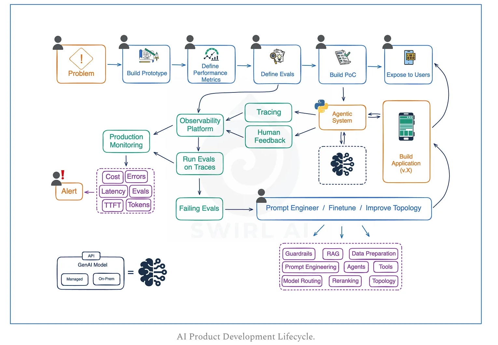

Evaluation Driven Development for Agentic Systems
The development process for Agentic Systems, particularly those based on Large Language Models (LLMs), is a continuous, iterative loop that prioritizes evaluation and feedback for successful evolution . This system aims to avoid common pitfalls by structuring the entire lifecycle from idea to production .
📌 Quick Navigation
- 1. Defining The Problem
- 2. Building a Prototype
- 3. Defining Performance Metrics
- 4. Defining Evaluation Rules
- 5. Building a Proof of Concept (PoC)
- 6. Instrumenting the Application (Observability)
- 7. Integrating with an Observability Platform
- 8. Evaluating Traced Data
- 9. Evolving the Application
- 10. Exposing New Versions of the Application
- 11. Continuous Development and Evolution of the Application
- 12. Monitoring and Alerting
1. Defining The Problem
This is the initial and vital step for any Agentic System development . * Goal: Ensure the problem is clearly defined, bounded, and aligned with business goals . Agentic Systems use LLMs or other GenAI models to solve complex, real-world problems, often involving automation . * Key Questions: * Is the problem best solved by AI or traditional software? * Who is the end user? * What are the edge cases? * What are the boundaries of acceptable behavior? * Important: Many AI projects fail not due to bad models, but due to solving the wrong problem . * Roles Involved: AI Product Managers, Domain Experts, AI Engineers .
📊 Visual Reference

2. Building a Prototype
After confirming AI is a good fit, the next step is rapid prototyping . * Goal: Primarily a learning phase to assess technical feasibility and de-risk the idea . * Key Considerations: * Use Notebooks or no-code tools, small datasets, and off-the-shelf models . * Focus on learning, not initial performance . * Document everything to avoid repeating mistakes . * Involve prompt engineering and market research for potential tools (e.g., Voice to Text platforms) . * Roles Involved: AI Product Managers, AI Engineers .
3. Defining Performance Metrics
Every application should solve a real business problem, which needs to be grounded in specific metrics . * Goal: Optimizing for a "north star output metric" (e.g., reduce headcount, improve user satisfaction, increase development velocity) and breaking it down into "input metrics" that the application will directly target (e.g., reduce average customer support ticket resolution time) . * Important: Without properly setting this stage, the project risks being deprioritized for not demonstrating enough business value . Alignment with business stakeholders is crucial before implementation . * Roles Involved: AI Product Managers, AI Engineers, Business Stakeholders .
4. Defining Evaluation Rules
Given the complexities of metrics for LLMs (e.g., human alignment, coherence, factuality), defining exact evaluation rules is highly beneficial . * Goal: Establish clear criteria for judging system responses, especially for chained LLM calls within an Agentic System topology . * Key Considerations: * Prepare an evaluation dataset (Inputs → Expected Outputs) for each node in your Agentic System topology . * Define unacceptable responses (e.g., toxicity, hallucinations, unsafe suggestions) . * Roles Involved: AI Product Managers, AI Engineers .
5. Building a Proof of Concept (PoC)
This stage emphasizes getting the system into users' hands as quickly as possible . * Goal: Rapidly push out a user-facing application to gather crucial "unknown unknowns" from user feedback [9, 10]. * Key Considerations: * Use LLM APIs from providers like OpenAI, Google, Anthropic, etc., for quick development . * The PoC can be as simple as an Excel Spreadsheet with input/output pairs, as long as it helps move metrics forward and is exposed . * User feedback is key to shifting perspectives on application improvement . * Important: If you can't push it out quickly, there's an issue with the process . A successful LLM PoC may look like an Excel Spreadsheet . * Roles Involved: AI Engineers .
6. Instrumenting the Application (Observability)
This is a key element in implementing Evaluation Driven Development . * Goal: Implement observability best practices by logging an extensive set of metadata about everything happening within the LLM-based system . * Key Considerations: * Log everything: prompts, completions, embeddings, latency, token counts, and user feedback . * Add additional metadata: prompt versions, user inputs, model versions used . * Ensure proper connection and ordering of operations within chains, as outputs of one LLM call often become inputs to the next . * Log multimodal data (PDFs, images, audio, video) . * Crucially, attach user feedback to the traces representing the user interaction when feedback was provided . * Roles Involved: AI Engineers .
7. Integrating with an Observability Platform
Beyond just tracking data, efficient visualization and analysis are crucial . * Goal: Utilize an observability platform for efficient search, visualization, prompt versioning, and automated evaluation capabilities . * Key Considerations: * Store evaluation rules within the platform to apply them to traces . * Use platforms as Prompt Registries to analyze and group evaluation results by Prompt Groups, as your application is a chain of prompts . * Benefit from smart sampling algorithms for cost-effective storage of traces at scale, as storing all traces can become too expensive . * Utilize platform-specific tracing SDKs for seamless instrumentation . * Important: Set this up early as it brings visibility to the "black box" of LLM applications . * Roles Involved: AI Engineers .
8. Evaluating Traced Data
With instrumentation and platform integration, you can now measure your application effectively . * Goal: Automatically run evaluations on the collected trace data, especially focusing on identifying failures . * Key Considerations: * Assumption: Evaluation rules are stored in the Observability platform, and traces with human feedback are connected . * Automatically run evaluations on traces hitting the Observability Platform . * Filter out traces with failing evaluations or negative human feedback; this "failing" data will be the primary focus for improvement . * Important: Running evaluations can be expensive (especially LLM-as-a-judge tactics), so sampling traces might be necessary . * Roles Involved: AI Engineers .
9. Evolving the Application
This is where the application is improved based on data-driven insights . * Goal: Enhance the application by focusing on failing evaluations and human feedback . * Key Considerations: * Start with better prompt engineering, data preprocessing, and tool integration before increasing system complexity . * Increase complexity (e.g., Simple Prompts → RAG → Agentic RAG → Agents → Multi-agent systems) only if there's a hard requirement and the current topology is not up to the task . * Maintain a "failing eval dataset" that is continuously fed with new failing samples and is never 100% "solved" . Your goal is to achieve 100% but by adding more failing samples, you never get there . * Important: Always involve Domain Experts at this stage for their insider knowledge and potential prompt suggestions . * Roles Involved: AI Engineers, Domain Experts .
10. Exposing New Versions of the Application
Rapid deployment of new versions is crucial for continuous improvement . * Goal: Quickly release updates to incorporate fixes and improvements, leveraging invaluable feedback . * Key Considerations: * Fast deployment improves user experience by fixing present problems, and some fixes can generalize to unknown problems . * Implement strict release tests and integrate evaluation datasets into CI/CD pipelines to ensure new releases do not degrade performance compared to previous versions . * Roles Involved: AI Engineers, Domain Experts .
11. Continuous Development and Evolution of the Application
This represents the core iterative loop of the Evaluation Driven Development process . * Cycle: Build → Trace, collect feedback → Evaluate → Focus on Failing Evals and Negative Feedback → Improve the application → Iterate . * Goal: Continuously evolve the application, adding new functionalities (often as new routes in the Agentic System Topology) by following the same process of prototyping, defining metrics, and new evaluations [19, 20]. For example, a simple chatbot can evolve into a system that manages a shopping cart . * Roles Involved: AI Engineers, Domain Experts, AI Product Managers .
12. Monitoring and Alerting
After implementing tracing and evaluation for development, monitoring almost comes out of the box . * Goal: Reuse implemented evaluations and traces for production monitoring and configure specific alerting thresholds . * Key Considerations: * Most relevant data for LLM-specific production monitoring is already available if application instrumentation was properly implemented . * Consider tracing and logging additional advanced metrics like TTFT (Time To First Token) and inter-token latency . * You will need to figure out the threshold for alerting . * Important: Try to avoid Alert Fatigue by carefully configuring thresholds that trigger alerts and avoid False Positives as much as possible . * Roles Involved: AI Engineers .